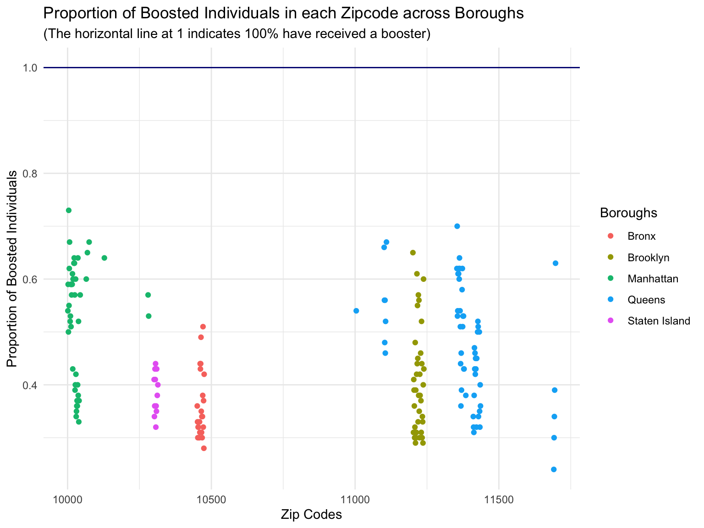
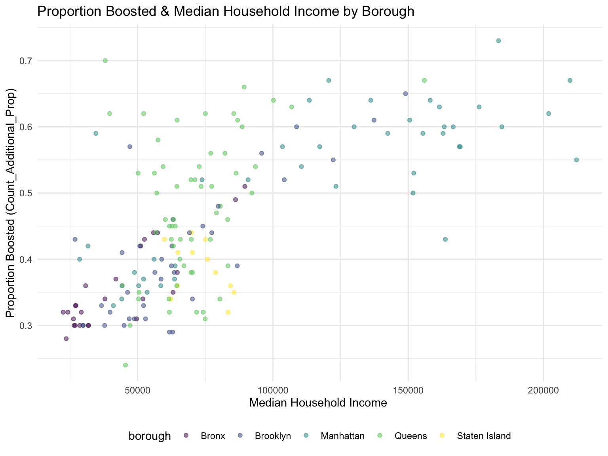
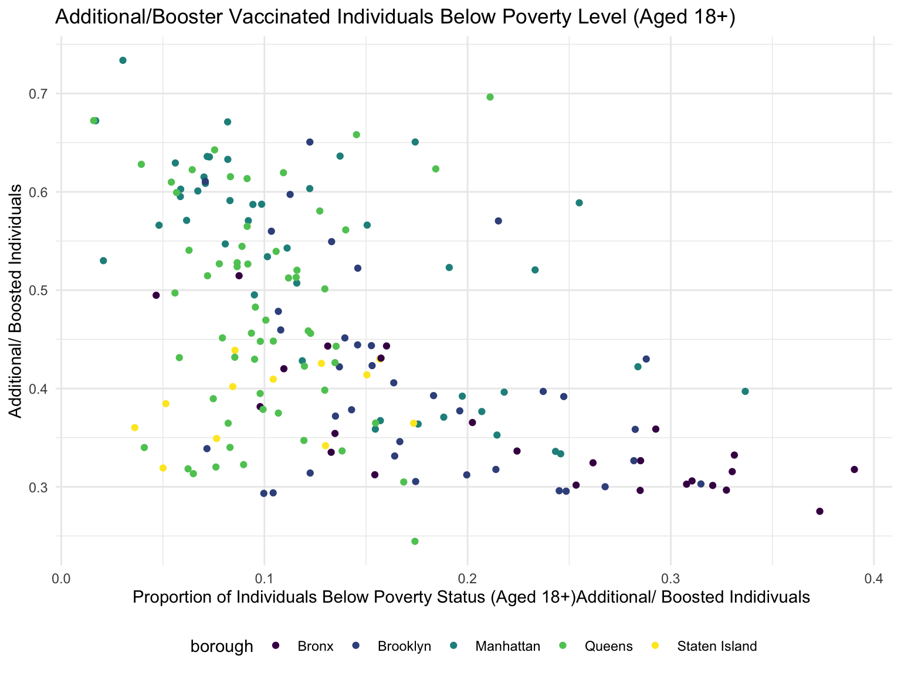

Exploratory Analysis
General Vaccine Data in NYC by Zipcode and Boroughs
We began with a preliminary data exploration of the proportion of individuals who were fully vaccinated and received boosters across different zipcodes in each borough by 3.09.22 (90 days after the booster approval).
Fully Vaccinated Individuals by Zipcode and Boroughs:
Fully Vaccinated: The graph below shows the proportion of people fully vaccinated (y-axis) in each zipcode (x-axis). The colors indicate the borough. From this graph we note a few observations:
In several neighborhoods the proportion of individuals vaccinated exceeds 1 (the blue line, which represents 100% of the population being completely vaccinated). This indicates that within those neighborhoods individuals received the primary vaccination series more than once.
While each borough ranged in the proportion of individuals vaccinated per neighborhood, it appears no neighborhoods in Staten Island and the Bronx had 100% of the population vaccinated. By contrast, in several neighborhoods across Manhattan and Brooklyn, individuals were fully vaccinated more than once.

Additional/Booster Vaccinated Individuals by Zipcode and Boroughs:
Boosted: The graph below shows the proportion of people fully boosted (y-axis) in each zip code (x-axis) with colors indicating the borough. This data was collected as of 3.09.22, 90 days after the booster was approved for individuals 18+.
From this graph, it is interesting to note that the proportion of individuals who received a vaccine across all boroughs ranged from 0-0.75. As before, neighborhoods in Staten Island and the Bronx had a fewer proportion of individuals who received the booster.

We then sought to explore how vaccination and booster trends varied across different demographic characteristics.
1.The Education Attainment in NYC by Vaccination Status and Boroughs
Fully Vaccinated Individuals by Education Status and Age

Additional/Booster Individuals by Education Status and Age

Fully Vaccinated Individuals by Education Status and Boroughs

Additional/Booster Individuals by Education Status and Boroughs

2. The Median Income vs Vaccination and Booster Coverage
Fully Vaccinated Individuals by Median Household Income and Boroughs

Additional/Booster Vaccinated Individuals by Median Household Income and Boroughs

3. Poverty Status vs Vaccination and Booster Coverage
Fully Vaccinated Individuals by determined Poverty Status Aged 18+

Additional/Booster Vaccinated Individuals by determined Poverty Status Aged 18+

Proportion of Adults aged 18+ with determined Poverty Status by Boroughs